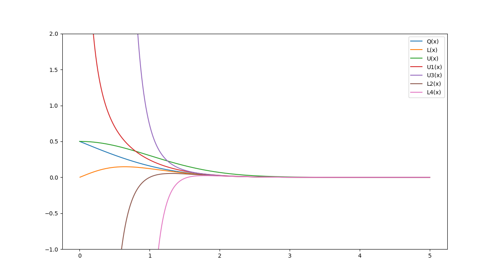
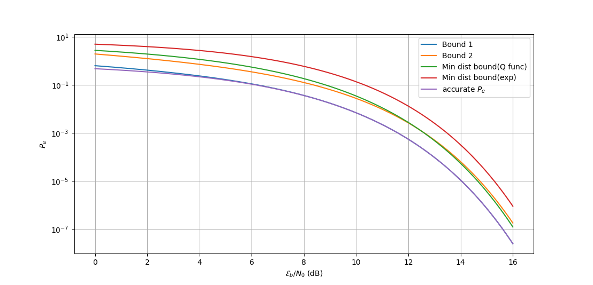

# 匹配滤波实现
其实前面几篇已经讲了好几遍 AWGN 信道理想接收机的实现了，这一篇再拎出来说是为了引出匹配滤波 (matched filter) 的概念。
我们已经知道 MAP 判决准则：
m^=1≤m≤Nargmax[ηm+rTsm]
其中rTsm 可以表示为 correlation 的形式
rTsm=∫0Tr(t)sm(t)dt
这为我们提供了基本的信号接收处理方式，就如下面的图所示。

问题在于，就接收机中模拟部分来看，为了实现向量化，我们需要对N 个基底向量进行积分，这是十分巨大的计算开销。
那么我们有解决办法吗？考虑一个冲激响应为hm(t)=sm(T−t) 的滤波器，我们对接收信号进行一个卷积：
r(t)∗h(t)∣t=T=∫−∞∞r(τ)hm(T−τ)dτ=∫0Tr(t)sm(t)dt
这样即可得到 correlation 的结果。这也就是匹配滤波的思路，下面我们要证明为什么要选择一个这样的滤波器hm(t)=sm(T−t)。
我们希望能够实现两个输出信噪比最高的滤波器，假定输入信号
r(t)=s(t)+n(t)
我们使用一个冲激响应h(t) 的滤波器对输入信号进行滤波，得到
y(t)=h(t)∗r(t)=h(t)∗s(t)+h(t)∗n(t)=h(t)∗s(t)+z(t)
设抽样时刻t=T，有
h(t)∗s(t)∣t=T=∫−∞∞H(f)S(f)ej2πftdf∣t=T
为了便于证明，我们将时域信号转移到频域上。经过滤波的噪声能量满足：
σz2=E[z2(T)]=Rz(0)
在频域上，我们能够得到
σz2=∫−∞∞SN(f)∣H(f)∣2df=2N0∫−∞∞∣H(f)∣2df
那么考虑 SNR：
SNR=≤=2N0∫−∞∞∣H(f)∣2df∣∫−∞∞H(f)S(f)ej2πftdf∣22N0∫−∞∞∣H(f)∣2df∫−∞∞∣H(f)∣2df⋅∫−∞∞∣S(f)ej2πfT∣2dfN02∫−∞∞∣S(f)ej2πfT∣2df
其中从第一步到第二步，有积分形式的 Cauchy-Schwartz 不等式：
∣∫f(t)g(t)dt∣2≤∫∣f(t)∣2dt⋅∫∣g(t)∣2dt
当且仅当f(x) 和g(x) 线性相关时不等式两边取等。因此，SNR 式取等条件为
H(f)=α⋅S∗(f)e−j2πft→h(t)=αs∗(T−t)
这个关系可以通过下面的式子给与证明：
===∫−∞∞s∗(T−t)e−j2πftdt(∫−∞∞s(T−t)ej2πftdt)∗(∫−∞∞s(t′)e−j2πf(t′−T)dt′)∗s∗(f)e−j2πfT
此时，匹配滤波输出的信噪比为2E/N0。
# 最大似然判决的最大错误率联合界
对通信系统进行分析时，我们希望能够得到错误率的精确取值。但是在实际环境中，我们往往难以求解出一个精确的解，甚至整个系统都无法通过能够数值计算的方法表示。
因此，我们希望能够求出通信系统错误率的上界，用以预估系统的性能。
对于工程中使用的 ML 判决准则，其判决域为
Dm={r:f(r∣sm)>f(r∣sk),∀k=m}
对应错误的判决域即为其补集Dmc。考虑一个错误事件εm→m′
εm→m′={r:f(r∣sm≤f(r∣sk),∀k=m}
错误事件对应的判决域为错误事件中各个错误判决域的并集：
Dmc=1≤m≤Mm′=m⋃εm→m′
符号错误的概率即是落入错误事件对应的判决域的概率
Pe=M1m=1∑M∫Dmcf(r∣sm)dr=M1m=1∑MPr∣sm{Dmc}=M1m=1∑MPr∣sm{1≤m≤Mm′=m⋃εm→m′}≤M1m=1∑M1≤m′≤Mm′=m∑Pr∣sm{εm→m′}
上式中放缩一步是由并集的基本性质得到：
P(A∪B)≤P(A)+P(B)
在 AWGN 信道上，有
Pr∣sm{εm→m′}=∫εm→m′f(r∣sm)dr=Q(2N0dm,m′2)
即其取决于符号之间的距离。由此我们可以得到 ML 判决的最大错误率。
# 并集带来的不等式
为了更好的估计通信系统的性能，我们需要一些常用的不等式。
最基本的是并集不等式（union bound, Boole's inequality）：
Pr{k=1⋃NAk}≤k=1∑NPr{Ak}
即并集所对应的事件的概率低于各个事件概率之和。
可以利用概率的性质得到相反的表达式 (reverse union bound)：
Pr{A−k=1⋃NAk}≥Pr{A}[1−k=1∑NPr(Ak∣A)]
proof
=≥≥==Pr(A−k=1⋃NAk)Pr(A−k=1⋃N(A∩Ak))Pr(A)−Pr(k=1⋃N(A∩Ak))Pr(A)−k=1∑NPr(A∩Ak)Pr(A)−Pr(A)k=1∑NPr(A)Pr(A∩Ak)Pr(A)−Pr(A)k=1∑NPr(Ak∣A)
然而，上面两种不等式得到的上下界是十分粗糙的，往往和实际情况相差甚远。我们考虑在单纯的并集基础上增加一些修正：
s1=i=1∑NPr(Ai)s2=i=1∑N−1j=i+1∑NPr(Ai∩Aj)...sk=i1<i2<...<ik∑Pr(Ai1∩Ai2∩...∩Aik)
对于单纯的并集s1，其相较于真实概率是偏大的，因此我们减去其中交集的修正项s2，得到了一个偏小的结果（下界）。为了修正偏小的结果，我们可以加上修正项s3，得到一个相较于真实概率偏大的结果（上界），以此类推。这样，我们得到了 Bonferroni 不等式：
i=1∑2u2(−1)i−1si≤Pr(i=1⋃NAi)≤i=1∑2u1−1(−1)i−1si,∀2u1−1≤N,2u2≤N
# 对 Q 函数的近似
Q 函数属于难以进行数值计算的函数，因此，很多时候我们希望能够通过一些方法来近似计算 Q 函数。
Q 函数可以表示为无穷级数的形式：
Q(x)=2πx1e−x2/2(1−x21+x31⋅3−x51⋅3⋅5+...)
我们可以使用无穷级数的前几项来近似计算 Q 函数：
L2(x)=2πxe−x2/2(1−x21)U1(x)=2πxe−x2/2
这样有
L2(x)≤Q(x)≤U1(x)
更精确的，我们可以使用更多项来近似：
L4(x)=2πx1e−x2/2(1−x21+x31⋅3−x51⋅3⋅5)U3(x)=2πx1e−x2/2(1−x21+x31⋅3)
得到
L4(x)≤Q(x)≤U3(x)
此外，还有一个更加常用的近似：
L(x)=2πx1e−x2/2(1+x2x2)≤Q(x)≤U(x)=21e−x2/2
上面的几类近似如图所示，在x 较大时，这些近似都是十分趋近于Q(x) 的。

# 通信系统常见的错误率上下界
前面讲了 ML 判决的错误率上界，考虑
Pe≤bound 1M1m=1∑M1≤m′≤Mm′=m∑Q(2N0dm,m′2)
利用 Q 函数性质
Q(x)≤U(x)=21e−x2/2
放缩得到
Pe≤bound 1M1m=1∑M1≤m′≤Mm′=m∑Q(2N0dm,m′2)≤bound 22M1m=1∑M1≤m′≤Mm′=m∑exp(−4N0dm,m′2)
这其实是一个比较准的上界，不过考虑到如果M 比较大，那么需要计算的项数将会是非常的多。为了便于表示，我们记
X=exp(−1/(4N0))
这样，bound2 可以转换为
T(x)=m=1∑M1≤m′≤Mm′=m∑Xdm,m′2=all distinct d∑adXd2
从而
Pe≤bound 22M1T(X)
不过，我们注意到
Q(2N0dm,m′2)≤Q(2N0dmin2)exp(2N0dm,m′2)≤exp(2N0dmin2)
这样有
Pe≤(M−1)Q(2N0dm,m′2)≤2M−1exp(−2N0dmin2)
这是一个更加便于计算的上界（minimum distance bound）。
为了衡量几个上界的误差程度，我们以 16-QAM 为例来说明。几种上界的Pe−N0Eb 曲线如图所示。

可见错误率上界 bound 1 十分接近实际错误率，而放缩较多的其他几种上界距离错误率实际值差别较大。
错误率下界相较错误率上界使用较少，一般可以用来衡量在较差的情况下接收机的性能。考虑
Pe=M1m=1∑M∫Dmcf(r∣sm)dr≥M1m=1∑M1≤m′≤Mm′=mmax∫εm→m′f(r∣sm)dr=M1m=1∑M1≤m′≤Mm′=mmaxQ(2N0dm,m′2)=M1m=1∑MQ(2N0dm,m′2)≥MNminQ(2N0dmin2)
这里Nmin≤M，是星座图中满足到附近点距离等于dmin 的点的个数。